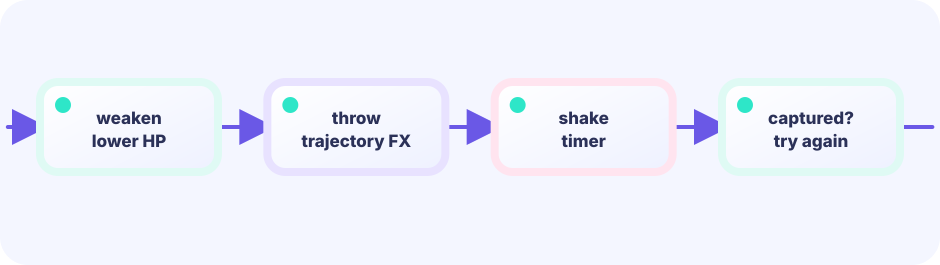

DATA
Use throw, flight, three rocks, and a success burst as in-between frames worth waiting for.
★★★★☆ / PLAYABLE
Use throw, flight, three rocks, and a success burst as in-between frames worth waiting for.
PLAY FIRST
Use throw, flight, three rocks, and a success burst as in-between frames worth waiting for.

DEEP DIVE
Roll success exactly once when the orb is thrown and store that result in a phase. Then present the same answer through an arc, rocks, and particles; never reroll on every tick.
Use throw, flight, three rocks, and a success burst as in-between frames worth waiting for.
Roll success exactly once when the orb is thrown and store that result in a phase. Then present the same answer through an arc, rocks, and particles; never reroll on every tick.
Change travel order or chase a capture streak on another run.
SYSTEM LAB
Roll success exactly once when the orb is thrown and store that result in a phase. Then present the same answer through an arc, rocks, and particles; never reroll on every tick.
READY
THE UPDATE / DRAW BOUNDARY
Read keys and touch, then change positions, HP, gauges, timers, boards, and queues. Rules and decisions live here too.
input → rule → change gameRead the finished game state and place pictures, text, and effects. It never changes game state.
read game → project pixelsFor this lesson, put a new rule in Update (or a pure helper called by Update). Draw only shows the result of that rule.
GO + EBITENGINE
Use throw, flight, three rocks, and a success burst as in-between frames worth waiting for.
success := rng.Intn(100) < chance
phase = throw
// Update advances flight → rock → burst
if phase == contact { show(success) }Roll success exactly once when the orb is thrown and store that result in a phase. Then present the same answer through an arc, rocks, and particles; never reroll on every tick.
Change encounter tables or presentation time.
Add a region whose encounters change with weather.
FEEDBACK